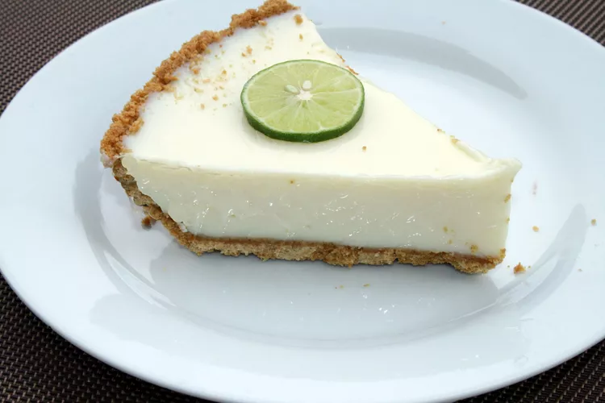

Key Lime Pie Recipe

This key lime pie recipe is made with condensed milk and sour cream.
Fabulously easy and a summertime favorite! If you have time, a homemade
graham cracker crust is better. Garnish with whipped cream and thin slices
of lime if you like.
There's nothing like a classic Key lime pie to satisfy your sweet tooth.
This sweet, rich, creamy, and tangy Key lime pie recipe is easy to make on
a whim with just five easy-to-find ingredients.
Ingredients
- 3 cups sweetened condensed milk
- ¾ cup key lime juice
- ½ cup sour cream
- 1 tablespoon grated lime zest
- 1 (9 inch) prepared graham cracker crust
Steps
- Preheat the oven to 350 degrees F (175 degrees C).
-
Combine condensed milk, key lime juice, sour cream, and lime zest in a
bowl; mix well. Pour into graham cracker crust; place pie on a baking
sheet.
-
Bake in the preheated oven for 5 to 8 minutes, until tiny pinhole
bubbles burst on the surface of the pie. The filling will be wobbly but
not browned.
-
Transfer pie to a wire rack to cool, then thoroughly chill pie in the
refrigerator before serving, about 1 hour. Garnish with lime slices and
whipped cream, if desired.
-
Reduce heat, and season with remaining 1 teaspoon garam masala and
cayenne. Stir in a few spoonfuls of sauce, and simmer until liquid has
reduced, and chicken is no longer pink. Add cooked chicken into sauce
and stir together.
Return Home